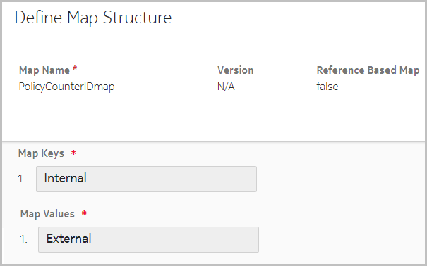
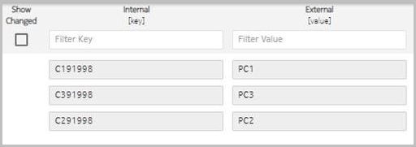
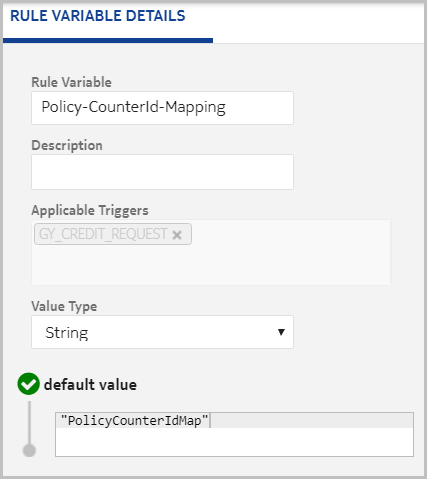

For subscriber's policy counters and their status, OCS and PCRF communicate through the Sy interface. The PCRF can have its own policy counter identifiers, and these may be required in the policy counter status reports. NCC supports maintaining both internal (OCS) policy counter ID and external (PCRF) policy counter ID and define a mapping between the two.
To achieve this, a mapping table is created with the mapping of internal and external counters. In the map, the key must have internal counter name and the value must have the external counter name. The name of the mapping table is then configured in a rule variable in the GY_CREDIT_REQUEST trigger.
Configuration
Create a mapping table (in Charging → ☰ → Mapping tables) containing one map key and one map value. Provide the internal counter names in map key and external counter names in map value.
Define map structure with one map key and one map value as shown in the following figure:
Configure map values as shown in the following figure:
Create a rule variable in the GY_CREDIT_REQUEST trigger, and configure the name of the mapping table in the default value field. The default value for this field is set as PolicyCounterMap. Change this to provide the name of the appropriate mapping table.

Additional information
-
This feature is applicable only for PUSH mode, in which all available policy counters are sent in SLA.
-
The CDRs generated for Sy interface contain the internal counter names.
-
If a corresponding external counter name is not found for an internal counter, then the internal counter name is sent to PCRF.
-
If multiple internal counter names are mapped to a single external policy counter name, then any one of the internal counters is sent to PCRF in SLA or SNR.
Example
Consider the following mapping table:
|
OCS counter ID |
PCRF counter ID |
|---|---|
| C1 | PC_1 |
| C2 | PC_2 |
| C3 | PC_1 |
| C4 | - |
Following reports are prepared:
-
Policy-Counter-Status-Report {Policy-Counter-Identifier = "PC_1",Policy-Counter-Status = "Value1"}
-
Policy-Counter-Status-Report {Policy-Counter-Identifier = "PC_2",Policy-Counter-Status = "Value2"}
-
Policy-Counter-Status-Report {Policy-Counter-Identifier = "C4",Policy-Counter-Status = "Value4"}
 Note:
Note:-
C1 and C3 have same external counter name, hence one is chosen randomly.
-
C4 is sent to PCRF as no explicit mapping found.
This only impacts Spending-Limit-Answer (SLA) and Spending-Status-Notification-Request (SNR). OCS sends SLA/SNR with all policy counters by mapping their internal names to the external names and their status attached to the given Subscription-Id.
The flows of Spending-Limit-Request (SLR), Spending-Status-Notification-Answer (SNA), Session-Termination-Request (STR), and Session-Termination-Answer (STA) have no impact.